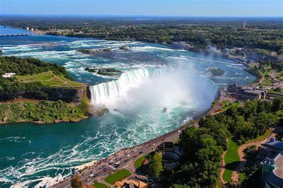
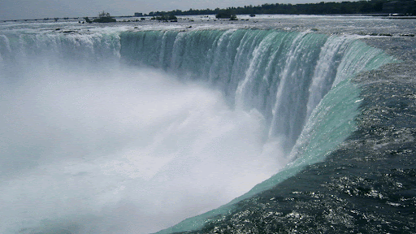
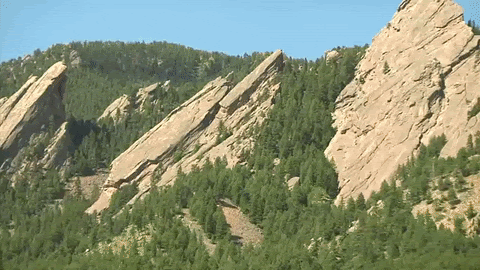
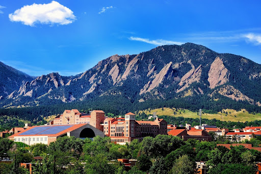
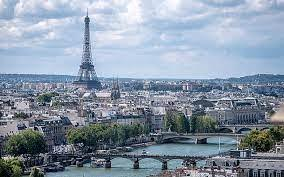
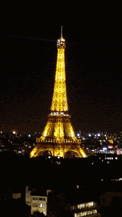
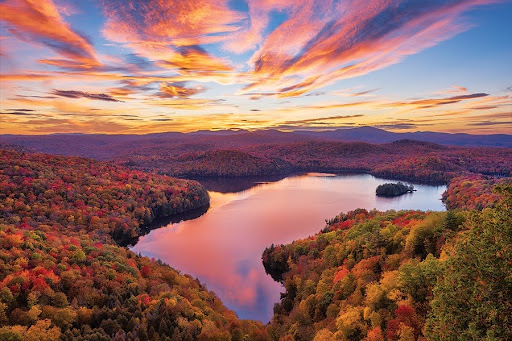
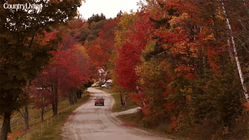

YellowStone

On March 1, 1872, Yellowstone became the first national park for all to enjoy the unique hydrothermal and geologic features. Within Yellowstone's 2.2 million acres, visitors have unparalleled opportunities to observe wildlife in an intact ecosystem, explore geothermal areas that contain about half the world’s active geysers, and view geologic wonders like the Grand Canyon of the Yellowstone River.
Photo Gallery


Recommended Travel Plan
Day 1
- Old Faithful
- Grand Prismatic Spring
- Hike Fairy Falls Trail
- We will be staying in Grant Village
Day 2
- West Thumb Geyser Basin (squeeze in visit at end of day 1?)
- Hayden Valley
- Grand Canyon hike?
- Stay at Canyon Lodge for days 2-4
Day 3
- Mount Washburn hike
- Tower Fall
Day 4
- Lamar Valley
- Hike somewhere?
Day 5
- Norris Geyser Basin
- Mammoth Springs/Boiling River
- Stay at Mammoth Lodge
Niagara Falls
 location
Niagara Falls is a city in Niagara County, New York, United States. As of the 2010 census, the city had a total population of 50,193, down from the 55,593 recorded in the 2000 census. It is adjacent to the Niagara River, across from the city of Niagara Falls, Ontario, and named after the famed Niagara Falls which they share. The city is within the Buffalo–Niagara Falls Metropolitan Statistical Area and the Western New York region.
Boulder Colorado
 location
Boulder is a city at the foothills of the Rocky Mountains, in northern Colorado. To the west, the trail-lined Flatirons are craggy rock formations overlooking the city. Downtown’s pedestrian Pearl Street Mall includes art galleries, cafes, restaurants and boutiques. The University of Colorado Boulder campus is home to the Fiske Planetarium and the Museum of Natural History, with zoology and anthropology exhibits.
Paris, France
 location
Paris, France's capital, is a major European city and a global center for art, fashion, gastronomy and culture. Its 19th-century cityscape is crisscrossed by wide boulevards and the River Seine. Beyond such landmarks as the Eiffel Tower and the 12th-century, Gothic Notre-Dame cathedral, the city is known for its cafe culture and designer boutiques along the Rue du Faubourg Saint-Honoré.
Vermont
 location
Vermont is a state in the northeastern United States, known for its natural landscape, which is primarily forested. Part of the New England region, it's also known for being home to more than 100 19th-century covered wooden bridges, and as a major producer of maple syrup. Thousands of acres of mountain terrain are crossed by hiking trails and skiing slopes.